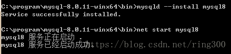
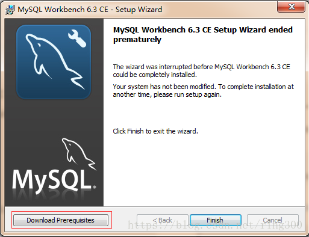
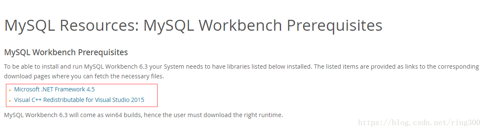

记录时间:2019年4月16日
1. 首先下载mysql-8.0.15-winx64，MYSQL刚从5.7版本升到8.0正式版，据说速度提升了2倍并且支持Emojis表情，那我们这边也直接下载MYSQL8.0来进行开发。
2. 下载MYSQL可视化工具mysql-workbench-community-8.0.15-winx64来进行表的创建查询等操作。
MySQL安装1. 将下载下来的mysql-8.0.11-winx64压缩包解压到常用安装目录下面
2. 在MYSQL安装目录下面新建一个配置文件（my.ini）用于配置字符集、端口等信息，配置信息如下
[mysqld]
# Remove leading # and set to the amount of RAM for the most important data
# cache in MySQL. Start at 70% of total RAM for dedicated server, else 10%.
# innodb_buffer_pool_size = 128M
# Remove leading # to turn on a very important data integrity option: logging
# changes to the binary log between backups.
# log_bin
# These are commonly set, remove the # and set as required.
basedir = D:\Program Files\mysql-8.0.15-winx64
datadir = D:\Program Files\mysql-8.0.15-winx64\data
port = 3306
# server_id = .....
# Remove leading # to set options mainly useful for reporting servers.
# The server defaults are faster for transactions and fast SELECTs.
# Adjust sizes as needed, experiment to find the optimal values.
# join_buffer_size = 128M
# sort_buffer_size = 2M
# read_rnd_buffer_size = 2M
sql_mode=NO_ENGINE_SUBSTITUTION,STRICT_TRANS_TABLES
character-set-server = utf8
performance_schema_max_table_instances = 600
table_definition_cache = 400
table_open_cache = 256
[mysql]
default-character-set = utf8
[mysqld_safe]
default-character-set = utf8
[client]
default-character-set = utf8
需要注意的是 basedir 是本地MYSQL的安装目录，datadir 是本地MYSQL数据库存放数据文件的位置，各项配置需要根据自己的环境进行配置。
1. 初始化数据库
在MySQL安装目录的bin目录下执行命令，执行完成后，会打印root用户的初始默认密码，在没有更改密码前，需要记住这个密码，后续登录需要用到。要是关快了或者没记住，那也没事，删掉初始化的 datadir 目录，再执行一遍初始化命令，又会重新生成的。当然，也可以使用安全工具，强制改密码，用什么方法，自己随意。
2. 安装服务 在MySQL安装目录的 bin 目录下执行命令（mysqld –install mysql）.
命令后面的服务名可以不写，默认的名字为 mysql。安装完成之后，就可以通过命令net start mysql启动MySQL的服务了，由于我这里写的是mysql，所以我这边启动的时候是执行net start mysql。

3. 更改密码和密码认证插件 在MySQL安装目录的 bin 目录下执行命令，这时候会提示输入密码，记住了第2步的密码，填入即可登录成功，进入MySQL命令模式：
在MySQL8.0.4以前，执行SET PASSWORD=PASSWORD(‘[修改的密码]’); 就可以更改密码，但是MySQL8.0.4开始，这样默认是不行的。因为之前，MySQL的密码认证插件是“mysql_native_password”，而现在使用的是“caching_sha2_password”。因为当前有很多数据库工具和链接包都不支持“caching_sha2_password”，为了方便，我暂时还是改回了“mysql_native_password”认证插件。 在MySQL中执行命令，修改密码验证插件，同时修改密码：ALTER USER ‘root’@’localhost’ IDENTIFIED WITH mysql_native_password BY ‘password’;其中password修改成你自己需要的密码，比如root:
如果想默认使用“mysql_native_password”插件认证，可以在配置文件中配置default_authentication_plugin项。
[mysqld]
default_authentication_plugin=mysql_native_passwordMySQL Workbench安装双击下载好的mysql-workbench-community-6.3.10-winx64.msi，如果有出现如下提示的话，还需要安装相应的Visual C++2015的包，可以在点OK后弹出的窗口左侧有下载入口，也可以直接访问https://dev.mysql.com/resources/wb62_prerequisites.html。


选择相应的安装目录，一步步默认操作即可完成安装。
可视化连接MYSQL运行这个安装好的MySQL Workbench，你会看到有个默认连接本地的一个入口，点击在弹出窗口中输入之前设置的MYSQL数据库新密码即可
特别注意：如果将MAPS软件的数据库置于远程访问，会涉及到远程访问权限问题。关于更改MySQL用户(比如root)权限，允许外部计算机访问等，请参考这个链接。
转载自https://blog.csdn.net/ring300/article/details/80432534，并由本站做出了部分修改！